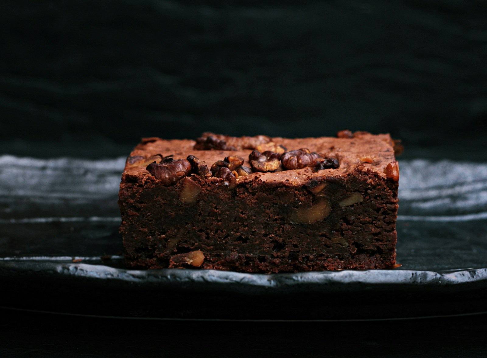

Simple bakes / Chocolate
Chocolate Brownies
Crisp on top. Soft in the middle.
A small square of a very good weekend.

- Prep time
- About 15 minutes
- Bake time
- 20–25 minutes
- Yield
- 9 squares
- Equipment
- 8-inch square pan
What you'll need
Ingredients
One step at a time
The method
Warm the oven.
Preheat to 350°F (175°C). Line an 8-inch square baking pan with parchment paper, leaving a little overhang for lifting.
Start with butter and sugar.
Mix the melted butter and sugar in a large bowl. Let the mixture cool slightly if the butter is still hot.
Add the eggs and vanilla.
Mix in the eggs and vanilla extract until the batter is smooth and well combined.
Fold in the dry ingredients.
Add the cocoa powder, flour, and salt. Stir just until no dry streaks remain, then fold in the chocolate chips and optional walnuts.
Into the pan.
Pour the batter into the lined pan and spread it evenly into the corners.
Bake, then check.
Bake for 20–25 minutes. The edges should be set, and a toothpick inserted into the center should have a few moist crumbs rather than wet batter. Ovens vary, so use the texture as well as the time.
Cool. Slice. Share.
Let the brownies cool completely in the pan. Lift them out using the parchment and cut into nine squares.